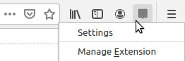

New features!
The Unofficial Extension for Hypothesis now provides some extra features to customize your annotation client.
Right-click the extension's button and click Settings to check them out!
The Unofficial extension for Hypothesis is based on Hypothesis' browser-extension and client. It provides Firefox support and some additional features. It is not endorsed by Hypothesis, but they have kindly authorized it to access their annotation service ♥.
Do you like this extension?
Please, star it on GitHub and review it on AMO.
Would you like to support its development and maintenance?
Buy me a coffee, or a beer ;)
Did you find a bug?
Please, report it here!
Do you have suggestions, or ideas for new features?
I’ll be happy to hear about them! Let’s discuss them here.